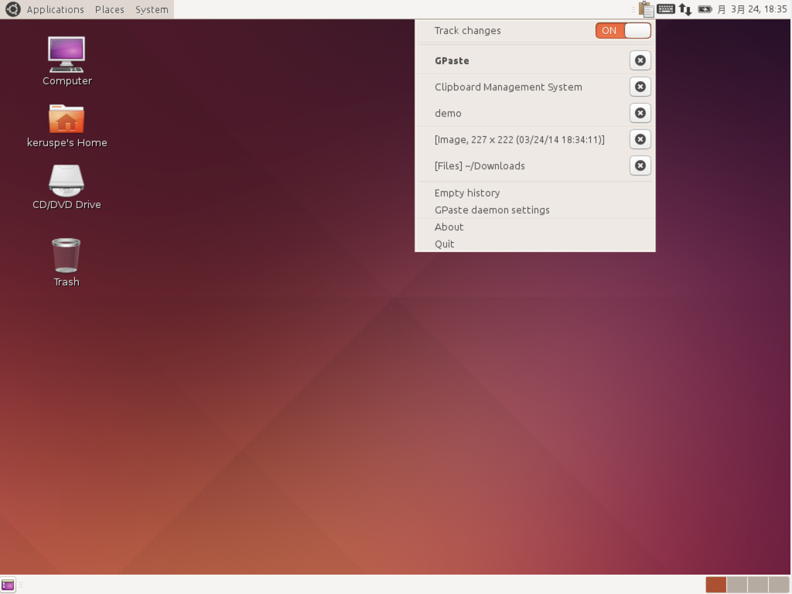

GPaste 3.10 released
by Marc-Antoine Perennou on March 25, 2014
It’s available there, get it while it’s hot!
This release is only compatible with GNOME 3.9.90 and above. if you’re still using an older version, please check GPaste 3.3.1.
Starting with this huge release, GPaste will follow the GNOME versionning system (or it would have been 4.0). This is the recommended version for use with GNOME 3.10 and above, 3.12 will follow soon.
This is the first release compatible with Unity (for Ubuntu 14.04 LTS and higher). Sadly, due to how Unity indicator work, there is no way to delete an item from the history from the indicator, you’ll have to do it with the command line.
What’s new?
- Follow GNOME versionning
- Don’t display error on daemon-reexec
- Fix coredumps due to g_error
- New library: libgpaste-applet
- Unity support (for Ubuntu 14.04 and above) using libgpaste-applet
- Port legacy applet to libgpaste-applet and rename to StatusIcon
- Redesign GPaste StatusIcon to make it simpler and similar to gnome-shell extension
- Vala is no longer required to build the applet (rewritten in C)
- Lower automake dependency to 1.11
- Be compatible with gnome-shell up to 3.12
- libgpaste-settings: add reset
- gpaste settings: add reset buttons
- gpaste settings: add a switch to enable the gnome-shell extension
- The gnome-shell gsettings schema is now required when –enable-gnome-shell-extension is provided (default)
- gpasted: GetElement now returns the display string
- gpasted now forwards the full history via dbus, letting the client manage the display limit
- gpasted gained GetHistoryLength, GetRawHistory, GetRawElement and About
- gpasted gained a new Version property
- Add about dialog to all components
- Prefer dark theme
- Display more info at the end of configure
- Provide appdata files
- Parallel build fixes
- Fix build issues for Fedora, Ubuntu and Debian
- clang related fixes
- Fix warnings
- Translations update
And don’t forget to run gpaste dr aka gpaste daemon-reexec after upgrading GPaste to activate new functionalities ;)
You then can run gpaste daemon-version to check that the correct daemon is running.
Screenshots
Ubuntu application indicator

Status icon

Gnome-shell extension
Settings utility